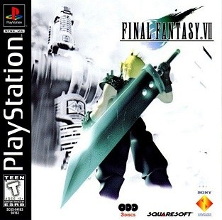

Avant de partir
Mode d'emploi

Jaquette © SQUARE ENIX. Guide non officiel.
Ce guide express
La version courte du guide complet de Final Fantasy VII (version de 1997, traduction française d'origine). Mêmes rubriques, mais resserrées : chaque partie regroupe plusieurs lieux et va droit au but.
- Objectif : ce que tu viens faire ici.
- Itinéraire : le trajet en quelques lignes.
- Déroulé : les étapes dans l'ordre, coffres et boss compris, avec l'astuce qui règle chaque combat.
- Butin : les objets qui comptent. Armes, armures, accessoires, Matérias, objets clés. Les potions de passage ont été regroupées.
- Conseils et pièges : ce qui change vraiment quelque chose dans la zone.
- Alertes : les ⏳ et les ⚠️, à lire avant de quitter le lieu.
- Check-list : à cocher au fur et à mesure.
Les parties 01 à 11 suivent l'histoire ; les parties 12 à 16 regroupent les quêtes annexes. Pour un tableau de butin exhaustif ou le détail d'une énigme, reporte-toi au guide complet.
Les six règles d'or
- Les Matérias font tout : sorts, invocations, commandes et bonus viennent d'elles. Relie-les sur les doubles-orifices (Tout + Restaurer).
- Retire les Matérias d'un personnage qui quitte l'équipe : elles partent avec lui.
- Garde toujours une Matéria Talent de l'ennemi équipée : plusieurs talents ne s'apprennent qu'une fois.
- Vole les boss et les ennemis rares : certaines armures uniques ne s'obtiennent que comme ça.
- Recrute Youfie et Vincent : le jeu ne les annonce jamais.
- Lis les ⏳ et les ⚠️ avant de quitter un lieu : Midgar, le Temple des Anciens et la quête d'Utai se ferment pour de bon.
Légende
- ⏳ Manquable : objet ou événement perdu si tu ne le fais pas maintenant.
- ⚠️ Point de non-retour ou précaution importante.
- Les noms sont ceux de la version française d'origine : Clad, Aéris, Youfie, Nanaki, Utai.
Partie 01
Les réacteurs n°1 et n°5
Objectif
Faire sauter deux réacteurs Mako avec Avalanche, rejoindre le bar Septième ciel au Secteur 7, puis atterrir dans l'église d'Aéris au Secteur 5. Le chapitre des bases : combats, Matérias, et premiers points d'affection.
Itinéraire
- Réacteur n°1 : les gardes, l'ascenseur, les échelles, le cœur du réacteur, la fuite.
- Secteur 8 (la marchande de fleurs), puis Secteur 7 : le bar, le marchand d'armes, la boutique.
- Le train pour le Secteur 5, le tunnel, le réacteur n°5.
- L'église, les toits, les taudis du Secteur 5, la maison d'Aéris, l'aire de jeu.
Déroulé
- Ramasse les 2 Potions près des premiers gardes. Dans le réacteur, fouille la petite salle en bas de l'écran avant de reparler à Jesse (Queue de Phénix), puis la Potion devant elle.
- Dans la grande allée : la Matéria Restaurer. Boss : Scorpion gardien — n'attaque pas quand il lève la queue. Équipe le Fusil d'attaque gagné à Barret, puis sors avant la fin du compte à rebours.
- Secteur 8 : achète une fleur à 1 Gil à Aéris en répondant « Rien… écoute… » (affection), puis Potion près des lampadaires.
- Secteur 7 : Barret te paie 1 500 Gils. Au premier étage du marchand d'armes, l'homme à droite offre la Matéria Tout, et un coffre cache un Ether. Achète la Matéria Feu dans le préfabriqué.
- Train du Secteur 5, pendant l'alarme : parle aux passagers (Queue de Phénix au premier wagon, Super potion au deuxième) et rattrape le voleur du troisième (« Ça va » : 100 Gils rendus).
- Tunnel : conduit de gauche (Ether), Potion et Tente près de Jesse et Biggs. Ether à la sortie de l'ascenseur. Porte à trois boutons : appuie en même temps que tes coéquipiers.
- Boss : Briseur de l'air, faible à la Foudre. Il frappe le personnage qui lui fait face.
- Église : pour éviter les combats d'Aéris pendant la fuite, pousse les barils dans l'ordre (près du toit et de l'escalier, puis près du toit et du mur au fond à gauche, puis le plus proche du mur au fond à droite).
- Taudis du Secteur 5 : dans la maison du petit garçon, lis l'affiche (1er prospectus du Turtle's Paradise) et laisse les 5 Gils du tiroir secret. Jardin d'Aéris : Ether à droite et Matéria Couverture au bout à gauche. Chez Aéris, Potion et Queue de Phénix près de la porte ; descends l'escalier en marchant.
Butin
| Objet | Type | Où l'obtenir |
|---|---|---|
| Restaurer | Matéria | Grande allée du réacteur n°1 |
| Fusil d'attaque | Arme Barret | Scorpion gardien |
| Tout | Matéria | Premier étage du marchand d'armes, Secteur 7 |
| Feu | Matéria | Boutique du préfabriqué, Secteur 7 |
| Couverture | Matéria | Jardin d'Aéris, au bout à gauche |
| Ether turbo | Soin | Le petit garçon, si tu as laissé les 5 Gils |
| Queue de Phénix ×3, Super potion | Soin | Réacteur n°1, passagers du train, chez Aéris |
| Ether ×5, Potion ×6, Tente | Soin | Réacteurs, tunnel, jardin, Secteur 7 |
| 1 500 Gils, 100 Gils | Gils | Barret, le voleur du train |
Conseils et pièges
- Les Matérias font tout : elles donnent sorts et commandes, et montent en niveau avec les AP. Tout + Restaurer soigne tout le groupe.
- Barret frappe à distance sans pénalité : garde-le en seconde ligne.
- La fleur, puis à qui tu la donnes (Tifa ou Marlène), compte pour la soirée du Gold Saucer.
Alertes
- ⏳ Manquable : les objets des passagers du train, seulement pendant l'alarme.
- ⏳ Manquable : l'Ether turbo, si tu prends les 5 Gils du tiroir.
- ⚠️ Tout Midgar sera perdu en quittant la ville, trois chapitres plus loin.
Check-list
- Matéria Restaurer, Scorpion gardien vaincu, Fusil d'attaque équipé
- Fleur achetée à Aéris
- Matéria Tout, Ether du marchand d'armes, Matéria Feu
- Objets des passagers et 100 Gils du voleur
- Briseur de l'air vaincu
- Prospectus n°1 lu, 5 Gils laissés
- Matéria Couverture et Ether du jardin
Partie 02
Wall Market, les égouts et le pilier
Objectif
Retrouver Tifa chez Don Cornéo grâce au déguisement le plus réussi, traverser les égouts et le cimetière des trains, assister à la chute du pilier du Secteur 7, puis grimper jusqu'au Bâtiment Shinra.
Itinéraire
- Wall Market : magasin de vêtements, bar, gymnase, restaurant, pharmacie, auberge, magasin de Matérias, Honey Bee Inn.
- Le palais de Cornéo, puis les égouts et le cimetière des trains.
- Le pilier du Secteur 7.
- Aire de jeu, Secteur 5, magasin GUN, puis l'ascension du câble.
Déroulé
- Au Honey Bee Inn, demande à l'homme en rose « Connaitrais-tu Tifa ? ». Aéris propose le déguisement.
- Les quatre meilleures pièces (elles garantissent que Cornéo te choisit) :
- Robe soie : au bar, l'homme à droite de l'entrée ; demande une robe douce et chatoyante ;
- Perruque-blonde : gagne le concours d'accroupissements du gymnase (carré, croix, rond en boucle, 30 secondes) ;
- Parfum sexy : plat à 70 Gils au restaurant, « C'était bon », Coupons pharmacie échangés contre le Digestif, apporté à la femme des toilettes du bar ;
- Diadème diamants : achète l'objet à 200 Gils du distributeur de l'auberge la nuit, rapporte-le au vendeur de Matérias.
- Bonus : la Carte membre (homme en bas à droite de l'entrée) ouvre le Honey Bee Inn ; demande « Fais-les se maquiller » pour plus de beauté.
- Palais : Ether derrière Tifa et Aéris, à la salle des tortures ; Hyper derrière le lit de Cornéo. Queue de Phénix à droite de la salle si tu n'es pas choisi. Pour viser Barret au rendez-vous : « Ummm… » puis « Si, il s'appelle Barret ».
- Boss : Aps, faible à la Foudre et à la Glace. Son raz-de-marée touche tout le groupe s'il te fait face : attaque-le dans le dos.
- Égouts : Potion, puis la Matéria Voler. Cimetière des trains : 3 Super potions, Écran sonore, Ether, plusieurs Potions. Vole le Bâton de frappe sur un Eligor.
- Pilier : achète tes objets à l'homme en rose et sauvegarde. Boss : Réno — frappe les pyramides pour libérer tes équipiers.
- Retourne à l'aire de jeu : Matéria Sentir en bas à droite. Récupère l'Ether turbo du petit garçon (5 Gils laissés).
- Achète 3 Batteries (300 Gils) au magasin GUN du Wall Market, puis grimpe : une batterie à chaque générateur. Saute sur la barre quand elle se rapproche. Poser la troisième batterie rapporte un Ether.
Butin
| Objet | Type | Où l'obtenir |
|---|---|---|
| Robe soie, Perruque-blonde, Parfum sexy, Diadème diamants | Objet clé | Quêtes du Wall Market |
| Carte membre | Objet clé | Homme en bas à droite de l'entrée |
| Voler | Matéria | Égouts |
| Bâton de frappe | Arme Aéris | À voler sur Eligor, cimetière des trains |
| Sentir | Matéria | Aire de jeu du Secteur 6, après le pilier |
| Batterie ×3 | Objet clé | Magasin GUN, 300 Gils |
| Hyper, Écran sonore | Divers | Chambre de Cornéo, cimetière des trains |
| Super potion ×3, Ether ×4, Potion ×4, Ether turbo | Soin | Palais, cimetière, générateur, petit garçon |
Conseils et pièges
- Les quatre meilleures pièces évitent deux combats au palais et ouvrent les répliques qui comptent pour Barret.
- Eligor n'apparaît qu'une fois sur quatre au deuxième écran du cimetière : insiste pour le Bâton de frappe.
- Équipe Voler sur un personnage rapide : beaucoup d'ennemis de Midgar portent des objets utiles.
Alertes
- ⏳ Manquable : les pièces du déguisement et le choix de Cornéo, la séquence ne se rejoue pas.
- ⏳ Manquable : la Matéria Sentir si tu ne repasses pas par l'aire de jeu, et le Bâton de frappe.
- ⚠️ Midgar devient inaccessible après le Bâtiment Shinra : vide les boutiques maintenant.
Check-list
- Robe soie, Perruque-blonde, Parfum sexy, Diadème diamants
- Choisi par Cornéo
- Ether et Hyper du palais
- Aps vaincu
- Matéria Voler et objets du cimetière
- Bâton de frappe volé
- Réno vaincu au pilier
- Matéria Sentir, Ether turbo
- 3 Batteries, Ether du générateur
Partie 03
Le Bâtiment Shinra
Objectif
Monter jusqu'au 67e étage pour sauver Aéris, recruter Nanaki, puis t'enfuir de Midgar à moto. Quatre Matérias, trois coupons et un mot de passe à ne pas rater.
Itinéraire
- Rez-de-chaussée et 1er étage (magasin), puis l'ascenseur jusqu'au 59e.
- 60e à 65e : les statuettes, le mot de passe, les coupons, le gymnase, la maquette.
- 66e à 68e : le conseil, le laboratoire de Hojo, le boss.
- La fuite : 69e, 70e, puis l'autoroute.
Déroulé
- Passe par-devant (ascenseur). Au rez-de-chaussée, fond à droite : 2e prospectus du Turtle's Paradise. Les deux coffres fermés du 1er étage attendent le disque 3.
- 59e : bats les gardes rouges, Carte 60. 60e : traverse sans te faire voir (la voie s'ouvre après quatre échecs). 61e : l'homme en costume gris, réponds « … » : Carte 62.
- 62e : le mot de passe de Domino est MAKO. Du premier coup, tu gagnes la Matéria El. Base. Carte 65.
- 63e, trois portes seulement : tout en haut à droite, puis la plus haute de la troisième rangée (Coupon A), le conduit en tournant à gauche (Coupon B), puis la troisième porte à gauche (Coupon C). À l'ordinateur central : Pendentif étoilé, Quatre orifices, Matéria Tout.
- 64e : ⚠️ mets 250 Gils dans le distributeur et tape dessus une fois — ça rapportera deux Sources au disque 3. Vestiaires : Queue de Phénix et Ether.
- 65e : reconstitue la maquette (cinq coffres de Secteur) : Carte 66. 66e : monte sur les toilettes pour espionner.
- 67e : vole le Bord-dur aux SOLDAT : 3e. Matéria Poison au fond du laboratoire. Boss : Specimen H0512.
- Retourne dans la cellule d'Aéris : Matéria Talent de l'ennemi. Puis Carte 68 et 2 Potions sur la passerelle.
- En cellule : « Je me demande comment va Aéris ? », puis « Dormir un peu ». Au réveil, libère tout le monde, 2 Potions dans le couloir aux traces de sang.
- 70e : retire les Matérias des personnages hors combat. Boss : Cent artilleurs, puis Hélimitrailleuse, puis duel Clad contre Rufus.
- Moto : protège la camionnette, puis boss : Boule motorisée.
Butin
| Objet | Type | Où l'obtenir |
|---|---|---|
| El. Base | Matéria | Mot de passe MAKO du premier coup |
| Pendentif étoilé | Accessoire | Coupon A |
| Quatre orifices | Armure | Coupon B |
| Tout | Matéria | Coupon C |
| Bord-dur | Arme Clad | À voler sur un SOLDAT : 3e |
| Poison | Matéria | Laboratoire de Hojo |
| Talent de l'ennemi | Matéria | Cellule d'Aéris, après le boss |
| Carte 60 à Carte 68 | Objet clé | Étages successifs |
| Élixir | Soin | Escaliers de derrière |
| Queue de Phénix, Ether, Potion ×4 | Soin | 64e, passerelle, couloir |
Conseils et pièges
- La Matéria Talent de l'ennemi ouvre toute la collection de techniques bleues : ne quitte pas le 67e sans elle.
- Garde une Matéria Talent de l'ennemi équipée désormais : tu apprendras Magique Matra dès la sortie de Midgar.
- Au 70e, Clad affronte Rufus seul : donne-lui les meilleures Matérias avant.
Alertes
- ⏳ Manquable : El. Base (mot de passe du premier coup), les trois coupons, la Matéria Talent de l'ennemi.
- ⏳ Manquable : les 250 Gils du distributeur — sans eux, pas de Source spirituelle ni de Source de rapidité au disque 3.
- ⚠️ Point de non-retour : quitter Midgar ferme la ville jusqu'à la fin du disque 2.
Check-list
- Prospectus n°2
- El. Base (MAKO du premier coup)
- Coupons A, B, C : Pendentif étoilé, Quatre orifices, Tout
- 250 Gils dans le distributeur, distributeur frappé
- Bord-dur volé, Matéria Poison
- Matéria Talent de l'ennemi
- Rufus et Boule motorisée vaincus
Partie 04
Kalm, le marais, la Mine de Mythril et Junon
Objectif
Écouter le récit de Clad à Kalm, traverser le marais du Zolom, la Mine de Mythril, puis réussir les deux parades de Junon avant d'embarquer sur le cargo. Beaucoup de Sources et deux Matérias uniques.
Itinéraire
- Kalm : les maisons, l'auberge, le flash-back de Nibelheim.
- La ferme de chocobos, puis le marais.
- La Mine de Mythril, avec un détour possible par le Fort Condor.
- Junon : la plage, Priscilla, la ville haute, les deux parades.
Déroulé
- Autour de Midgar, apprends Magique Matra sur les Sweepers personnalisés.
- Kalm : 3 Ethers dans les placards et l'armoire des maisons ; dans la maison la plus à l'est, le grenier (escalier en colimaçon) cache le Pacificateur et la commode du premier étage une Source de protection.
- Flash-back : dans la chambre de Tifa à Nibelheim, joue du piano (« Ouais, j'ai fait quelques notes ») — ça rapporte une Matéria au disque 2.
- Après le récit, ouvre cinq fois la commode de la chambre : Mégalixir. Tu reçois le PHS.
- Ferme de chocobos : dis « Wark » à un chocobo (Matéria Choco/Mog) et achète l'Appât-chocobo (2 000 Gils) à Choco Billy, plus des Légumes Curiel.
- Marais : traverse à dos de chocobo, loin du Zolom. Dès le niveau 12, tu peux le battre pour le talent Bêta.
- Mine de Mythril : Ether et Tente à droite de l'entrée, Matéria Longue portée en haut de la liane de gauche, Source spirituelle dans la salle de gauche, Élixir et Super potion au nord. Talent Lance-flammes sur les Dragons voûtés.
- Facultatif : le Fort Condor (« Nous allons t'aider ») et Youfie dans les forêts (chapitre 12). Vole le Boomerang aux Formule.
- Junon : boss : Grand œdème sur la plage, puis le bouche-à-bouche (41 respirations, jamais plus de dix d'affilée). Le lendemain, Priscilla donne la Matéria Shiva et le sifflet.
- Première parade : glisse-toi derrière une rangée incomplète et martèle Valider. Plus de 50 d'audience = 5 000 Gils.
- Ville haute : le hall des débutants (par le soldat du magasin adjacent) cache une 2e Matéria Talent de l'ennemi ; les bâtiments donnent Source spirituelle, Source de chance, Source de pouvoir, Source de protection, Source de rapidité et deux Soldat 1/35.
- Seconde parade : 100 points ou plus = Voleur fou (Clad), 60 à 90 = Matéria Super HP.
Butin
| Objet | Type | Où l'obtenir |
|---|---|---|
| Pacificateur | Arme | Grenier de la maison est de Kalm |
| Choco/Mog | Matéria | « Wark » à un chocobo de la ferme |
| Appât-chocobo | Matéria | Choco Billy, 2 000 Gils |
| Longue portée | Matéria | Liane de gauche, Mine de Mythril |
| Boomerang | Arme Youfie | À voler sur un Formule |
| Shiva | Matéria | Priscilla |
| Talent de l'ennemi | Matéria | Hall des débutants de Junon |
| Voleur fou ou Super HP | Arme (Clad), Matéria | Seconde parade |
| PHS | Objet clé | Après le récit de Kalm |
| Source de protection ×2, Source spirituelle ×2, Source de chance, Source de pouvoir, Source de rapidité | Divers | Kalm, mine, Junon |
| Mégalixir, Élixir, Super potion, Ether ×4, Tente | Soin | Kalm, Mine de Mythril |
Conseils et pièges
- Magique Matra, Bêta et Lance-flammes : trois talents bleus à prendre dans ce chapitre.
- Le Zolom se franchit aussi sans chocobo : sauvegarde et recharge quand il approche.
- Vise 100 points à la seconde parade : le Voleur fou est une excellente arme pour Clad.
Alertes
- ⏳ Manquable : le piano de Tifa pendant le flash-back, et le Mégalixir de la commode.
- ⏳ Manquable : l'Appât-chocobo au prix du disque 1, et les lots des deux parades.
- ⚠️ Monter sur le cargo te fait quitter le continent : finis tes achats avant.
Check-list
- Magique Matra appris
- Ethers, Pacificateur et Source de protection de Kalm
- Piano de Tifa joué, Mégalixir de la commode
- Choco/Mog et Appât-chocobo
- Longue portée et objets de la mine
- Shiva
- Talent de l'ennemi n°2 et les cinq Sources de Junon
- Lots des deux parades
Partie 05
Le cargo, Costa del Sol, le Mont Corel et le Gold Saucer
Objectif
Traverser l'océan en cargo, franchir le Mont Corel, découvrir le Gold Saucer, puis sortir de la prison du désert en gagnant ta première course de chocobos. Récompense : le Buggy, et une moisson de Talents de l'ennemi.
Itinéraire
- Le cargo : la cale, la salle de contrôle, le boss.
- Costa del Sol : la villa, le bar, la plage.
- Le Mont Corel : les rails qui cèdent, le nid, l'écran secret.
- Corel Nord et le Gold Saucer.
- La prison du désert, puis la course.
Déroulé
- Cargo : Ether dans le coffre de gauche de la cale, 3e Matéria Tout entre les cartons à droite. Retrouve Aéris, Tifa et Nanaki déguisés.
- Salle de contrôle : avant d'aller au fond, monte sur la passerelle (Tailleur de vent, Aéris). Boss : Jénova·NAISSANCE, puis ramasse la Matéria Ifrit au sol.
- Costa del Sol : la villa se vend 300 000 Gils (plus tard), mais son sous-sol est ouvert : Anneau feu, Moteur (Tifa), Source de pouvoir. Vois Hojo sur la plage avant de dormir.
- Mont Corel : au croisement, prends le rail du haut. Quand il cède, maintiens gauche (Bâton magicien) ou droite (Pendentif étoilé) en martelant Valider, puis l'autre rail pour l'autre objet. Mitrailleuse W (Barret) en haut, Ether turbo, Matéria Transformation.
- Abaisse le pont depuis la cabane, grimpe au nid : combat contre le Cokatolis, 10 Queues de Phénix.
- Écran secret : le rail qui semble aller vers l'eau, à gauche, mène à Tente, Source spirituelle et Source de pouvoir.
- Corel Nord : Ether dans le panier près du frigidaire, tente du sud-est.
- Gold Saucer : Cait Sith rejoint l'équipe avec la Matéria Manipuler. Prospectus n°3 dans l'hôtel du Ghost Square. Visite tout avant d'entrer au Battle Square, qui t'envoie en prison.
- Prison : talents Laser (Griffes de la mort) et Magique Matra (Moteurs de taureau). Chez M. Coates, Matéria Ramuh près de l'affiche de la salle des jockeys. Gagne la course : le Buggy.
- Avec le Buggy : Scaphandre sur les Harpies du désert, Grand garde en manipulant une Bonde de plage, Vent blanc en manipulant un Zemzelett (région de Junon). Les Cactuères rapportent 10 000 Gils.
Butin
| Objet | Type | Où l'obtenir |
|---|---|---|
| Tout | Matéria | Cale du cargo, entre les cartons |
| Tailleur de vent | Arme Aéris | Passerelle de la salle de contrôle |
| Ifrit | Matéria | Au sol, après Jénova·NAISSANCE |
| Anneau feu | Accessoire | Sous-sol de la villa |
| Moteur | Arme Tifa | Sous-sol de la villa |
| Bâton magicien, Pendentif étoilé | Arme (Aéris), Accessoire | Rails qui cèdent |
| Mitrailleuse W | Arme Barret | En haut du premier rail |
| Transformation | Matéria | Après le troisième rail |
| Manipuler | Matéria | Équipée sur Cait Sith |
| Ramuh | Matéria | Salle des jockeys |
| Buggy | Objet clé | Victoire à la course |
| Source de pouvoir ×2, Source spirituelle | Divers | Villa, écran secret |
| Queue de Phénix ×10, Ether turbo, Ether ×2, Tente | Soin | Nid, rails, cargo, Corel Nord |
Conseils et pièges
- Le passe à vie du Gold Saucer (30 000 Gils, ou 300 GP plus tard) : tu y reviendras souvent.
- Manipuler sert à apprendre les talents défensifs : lance-les sur le porteur de la Matéria Talent de l'ennemi.
- Voir aussi le chapitre 13 pour tout ce que le Gold Saucer rapporte.
Alertes
- ⏳ Manquable : la Matéria Ifrit si tu quittes la salle de contrôle, et la scène d'Hojo si tu dors d'abord.
- ⏳ Manquable : les objets des rails qui cèdent et l'écran secret.
- ⏳ Manquable : la Matéria Ramuh, et la prison devient inaccessible après la course.
Check-list
- 3e Matéria Tout, Tailleur de vent, Ifrit
- Sous-sol de la villa : Anneau feu, Moteur, Source de pouvoir
- Bâton magicien, Pendentif étoilé, Mitrailleuse W, Transformation
- Cokatolis et écran secret
- Prospectus n°3
- Ramuh, course gagnée, Buggy
- Talents Laser, Scaphandre, Grand garde, Vent blanc
Partie 06
Gongaga, le Canyon Cosmo et Nibelheim
Objectif
Récupérer Titan à Gongaga, suivre Nanaki au Canyon Cosmo et dans la Grotte Gi, puis revenir à Nibelheim : le manoir, le coffre-fort, Vincent, et le Mont Nibel.
Itinéraire
- Gongaga : les ruines du réacteur, le village.
- Canyon Cosmo : le bar, les boutiques, Bugenhagen, la Grotte Gi.
- Nibelheim : le village, le manoir, le sous-sol.
- Le Mont Nibel : les tuyaux, les grottes, le Gardien de Matéria.
Déroulé
- Gongaga (Buggy) : boss : Réno et Rude si tu arrives assez tôt. Côté gauche du réacteur, dans un trou : Matéria Titan. Au village : Mégaphone blanc (maison nord-est), Potion-X (dernière maison), Matéria Coup mortel à la sortie nord-ouest. Talent Air de crapaud sur les Touche-Moi.
- Canyon Cosmo : prospectus n°4 et Élixir à l'étage du bar, prospectus n°5 près du magasin d'armes. Achète Super HP et Super MP.
- Bugenhagen, le feu de camp (parle à Barret, Aéris, Tifa, Nanaki), puis la Grotte Gi avec Clad et Nanaki. Talent Peine de mort sur les Spectateurs Gi.
- Grotte Gi : le mécanisme « Ce rocher a une drôle de forme » ouvre la porte. Marche sur les flaques d'huile ; le chemin du sud mène à la Matéria Effet supplémentaire. Puis Mégaphone noir, Ether, et dans la salle aux cinq cavités : Anneau fée, Potion-X, Ether turbo (passages secrets). Contre les Piqueurs, Air de crapaud ou Mini.
- Boss : Gi Nattak — les soins le blessent. Matéria Gravité au sol. En partant, Nanaki reçoit le Peigne séraphin.
- Nibelheim : ⚠️ la Source de chance de la première maison à gauche et la Source spirituelle de l'homme près du manoir s'excluent — choisis. Élixir (homme n°12), Ether turbo (homme n°11), Poing de platine (homme n°4, chez Tifa), Source de chance (clones de la maison voisine).
- Manoir : coffre-fort Droite 36, Gauche 10, Droite 59, Droite 97 : boss Numéro perdu, Matéria Odin, Clé sous-sol et Mémoire Cosmos (Limite 4 de Nanaki). Puis Lanceur ennemi, Vipère jumelle, Mégaphone argent, Source de magie.
- Vincent au sous-sol (Clé sous-sol) : détails au chapitre 12. Séphiroth te donne la Matéria Destruction dans la bibliothèque. Talent ???? sur les Jersey (sans les frapper physiquement).
- Mont Nibel : Sabre rune au premier croisement, Barrette Plus au sommet de la petite route de droite. Déplie la seconde échelle, puis tuyaux 2 (Matéria Tout) et 4 (Arme de pouvoir). Élixir en longeant le mur gauche, Matéria El. Base près de la fontaine, CR d'embuscade (Vincent).
- Boss : Gardien de Matéria (talent Trine), puis Matéria Contre-attaque derrière lui.
Butin
| Objet | Type | Où l'obtenir |
|---|---|---|
| Titan | Matéria | Réacteur de Gongaga |
| Coup mortel | Matéria | Sortie nord-ouest de Gongaga |
| Mégaphone blanc, Mégaphone noir, Mégaphone argent | Arme Cait Sith | Gongaga, Grotte Gi, manoir |
| Super HP, Super MP | Matéria | Magasin du Canyon Cosmo |
| Effet supplémentaire | Matéria | Grotte Gi, chemin sud |
| Anneau fée | Accessoire | Passage secret de la Grotte Gi |
| Gravité | Matéria | Après Gi Nattak |
| Peigne séraphin | Arme Nanaki | Départ du Canyon Cosmo |
| Poing de platine | Arme Tifa | Maison de Tifa |
| Odin | Matéria | Après Numéro perdu |
| Clé sous-sol, Mémoire Cosmos | Objet clé | Numéro perdu |
| Lanceur ennemi | Arme Barret | Manoir |
| Vipère jumelle | Arme Youfie | Manoir |
| Destruction | Matéria | Séphiroth, bibliothèque |
| Sabre rune | Arme Clad | Mont Nibel |
| Barrette Plus | Arme Nanaki | Mont Nibel |
| Tout, El. Base, Contre-attaque | Matéria | Mont Nibel |
| Arme de pouvoir | Arme Barret | Quatrième tuyau |
| CR d'embuscade | Arme Vincent | Mont Nibel |
| Source de chance ×2 (ou 1 + Source spirituelle), Source de magie | Divers | Nibelheim, manoir |
| Élixir ×3, Ether turbo ×2, Potion-X ×2, Ether | Soin | Partout |
Conseils et pièges
- Super HP et Super MP valent chaque Gil : ce sont deux des meilleures Matérias du jeu.
- Numéro perdu est plus facile plus tard, mais il rapporte Odin et une Limite niveau 4 : à toi de voir.
- Les Jersey ne lancent plus ???? une fois frappés : attends qu'ils le lancent.
Alertes
- ⏳ Manquable : Titan, Effet supplémentaire et les objets des passages secrets de la Grotte Gi.
- ⏳ Manquable : une des deux Sources de Nibelheim, par construction.
- ⚠️ Vincent est facultatif : l'oublier coûte son arme ultime et sa Limite finale.
Check-list
- Titan, Coup mortel, Mégaphone blanc
- Prospectus n°4 et n°5, Super HP, Super MP
- Effet supplémentaire, Anneau fée, Gravité
- Source de Nibelheim choisie, Poing de platine
- Numéro perdu : Odin, Mémoire Cosmos, Clé sous-sol
- Vincent recruté, Destruction
- Mont Nibel : Sabre rune, Barrette Plus, Tout, El. Base, Contre-attaque
Partie 07
Le Village de la Fusée et le Temple des Anciens
Objectif
Recruter Cid et gagner le Tiny Bronco, obtenir la Clé de pierre dans l'arène de Dio, vivre la soirée au Gold Saucer, puis vider le Temple des Anciens — qui disparaît entièrement à la fin du chapitre.
Itinéraire
- Le Village de la Fusée : le vieil homme, les maisons, la fusée.
- Le vendeur d'armes de Gongaga, puis le Battle Square du Gold Saucer.
- La nuit au Gold Saucer.
- Le Temple des Anciens : le labyrinthe, les pierres roulantes, l'horloge, la salle du mage, les fresques.
Déroulé
- Village de la Fusée : parle au vieil homme jusqu'à ce qu'il propose de voir la fusée : Yoshiyuki (Clad). Source de pouvoir dans la maison à l'extrême droite, Bras vis (Barret) dans la voisine.
- Boss : Palmer, très facile. Cid rejoint le groupe avec le Tiny Bronco (eaux claires seulement).
- Entraîne-toi sur les Chasseurs de têtes de la région de Mideel jusqu'au niveau 35.
- Le vendeur d'armes de Gongaga t'envoie chez Dio. Arène du Battle Square : 8 victoires = Gilet protection + Plume chocobo ; 5 ou plus = Gilet protection. Tu reçois la Clé de pierre dans tous les cas.
- Nuit au Gold Saucer : le rendez-vous (chapitre 13). Poursuis Cait Sith (Battle, Speed, Wonder, Chocobo), puis ouvre l'armoire à droite de la fenêtre : Élixir, une seule chance.
- Temple (Clad et Aéris obligatoires) : Tseng rend la clé, pose-la sur l'autel. Trident (Cid), Source spirituelle, Fusil argent (Vincent), Ether turbo, Punch foudroyant (Tifa).
- Avant de suivre le second mage : sous l'arche, escalier de droite, sous le grand escalier : Matéria Super chance.
- Pierres roulantes : abrite-toi dans le creux des rochers. Matéria Trans. après la source.
- Horloge (ne touche jamais l'aiguille des secondes) : salle IIII Garde de princesse, salle V Ruban, salle VII Conque, salle VIII Mégalixir, plus deux coffres gardés en I et III. Tomber donne le Coup d'ongle.
- Salle VI : entre directement par la porte n°2 (troisième du premier étage) pour bloquer le mage. Gant de travail en bas de la salle.
- Boss : Dragon rouge, puis Matéria Bahamut — équipe-la. Boss : Porte des démons en salle XII. Matéria noire au centre.
Butin
| Objet | Type | Où l'obtenir |
|---|---|---|
| Yoshiyuki | Arme Clad | Le vieil homme du Village de la Fusée |
| Bras vis | Arme Barret | Maison voisine |
| Clé de pierre | Objet clé | Dio |
| Gilet protection, Plume chocobo | Accessoire | Arène de Dio |
| Trident | Arme Cid | Premier coffre du temple |
| Fusil argent | Arme Vincent | Salle du mage marchand |
| Punch foudroyant, Gant de travail | Arme Tifa | Temple |
| Super chance | Matéria | Sous le grand escalier |
| Trans. | Matéria | Après les pierres roulantes |
| Garde de princesse | Arme Aéris | Salle IIII |
| Ruban | Accessoire | Salle V |
| Conque | Arme Cait Sith | Salle VII |
| Coup d'ongle | Arme Clad | Étage inférieur |
| Bahamut | Matéria | Après le Dragon rouge |
| Source de pouvoir, Source spirituelle | Divers | Village de la Fusée, temple |
| Élixir, Mégalixir, Ether turbo | Soin | Hôtel, salle VIII, temple |
Conseils et pièges
- Équipe Bahamut avant la Porte des démons : c'est l'invocation qui fait la différence.
- Poison tue les Œil 8 de la salle III.
- Entraîne Aéris avant le temple, elle est obligatoire.
Alertes
- ⏳ Manquable : tout le temple — Ruban, Super chance, Trans., armes de l'horloge — disparaît à la fin du chapitre.
- ⏳ Manquable : l'Élixir de l'armoire de l'hôtel, et la Plume chocobo de l'arène.
- ⚠️ Le rendez-vous dépend de choix faits depuis le début : impossible à rattraper maintenant.
Check-list
- Yoshiyuki, Bras vis, Source de pouvoir
- Cid recruté, Tiny Bronco
- Clé de pierre, Gilet protection, Plume chocobo
- Élixir de l'armoire fantôme
- Super chance et Trans.
- Horloge : Garde de princesse, Ruban, Conque, Mégalixir
- Gant de travail, Bahamut
- Porte des démons vaincue
Partie 08
La Cité des Anciens et le Grand Glacier
Objectif
Déterrer la Harpe lunaire au Village des ossements, attraper Kjata dans la Forêt endormie, vider la Cité des Anciens, puis, au disque 2, traverser la Vallée de Corral, le Village Glaçon et le Grand Glacier — où se cache Alexandre.
Itinéraire
- Village des ossements, Forêt endormie, Vallée de Corral.
- La Cité des Anciens, jusqu'à l'autel.
- La grotte de la Vallée de Corral, puis le Village Glaçon.
- Le surf, puis le Grand Glacier et ses écrans numérotés.
Déroulé
- Village des ossements : « Commencer à creuser ». Les hommes regardent vers l'objet : la Harpe lunaire est dans la zone verte (100 Gils par fouille). Mop (Cid) en zone orange, Cordage (Vincent) en zone bleue.
- Forêt endormie, deuxième écran : attrape Kjata, qui roule et se téléporte. Vallée de Corral : Cercle d'eau sous le tronc (utile contre Jénova·VIE).
- Cité des Anciens : Source de magie (maison nord-ouest), Bracelet aurore (coffre caché en bas des escaliers à l'est), Source de protection, Élixir. Après t'être reposé, Matéria Talent de l'ennemi derrière le lit du fond.
- Maison en coquillage : Matéria Comète tout en haut. Puis l'autel. Boss : Jénova·VIE (Cercle d'eau équipé). Fin du disque 1.
- Disque 2, grotte de Corral : Vipère hallebarde (contourne le coquillage par la gauche), Bracelet éclair, Hypnocouronne, Mégalixir, Matéria Super magie au bas de la grande échelle, Source de pouvoir.
- Village Glaçon : esquive Elena en martelant gauche/droite. Surf des neiges (garçon blessé), Carte-glacier au mur de la maison de droite, Vaccin, Boisson de héros, Potion-X (auberge), Ether turbo (maison nord-ouest).
- Surf : le choix aux deux intersections fixe l'écran d'arrivée (gauche-droite = 1, gauche-gauche = 2, droite-droite = 3, droite-gauche = 10).
- Grand Glacier (carte avec la touche carrée) : Source spirituelle (écran 2), Potion (5), Élixir (12), Matéria Tout (16).
- Alexandre : touche la source d'eau chaude (écran 14), puis entre dans la caverne à droite de la caverne centrale du désert enneigé. Boss : Neige (Confusion) : Matéria Alexandre.
- Bit de sûreté (écran 6/8) : les 25 glaçons — chaque saut ouvre les voisins directs et referme ceux qui étaient ouverts.
- Coupure supplémentaire : depuis l'écran 13, bifurcation nord-est, à mi-parcours du second écran de neige.
- S'évanouir dans le froid te réveille chez Holzoff, au pied de la Falaise de Gaëa : c'est la suite logique.
Butin
| Objet | Type | Où l'obtenir |
|---|---|---|
| Harpe lunaire | Objet clé | Zone verte du Village des ossements |
| Mop | Arme Cid | Zone orange |
| Cordage | Arme Vincent | Zone bleue |
| Kjata | Matéria | Forêt endormie |
| Cercle d'eau | Accessoire | Sous le tronc, Vallée de Corral |
| Bracelet aurore | Armure | Cité des Anciens, coffre caché |
| Talent de l'ennemi | Matéria | Derrière le lit du fond |
| Comète | Matéria | Haut de la maison en coquillage |
| Vipère hallebarde | Arme Cid | Derrière le grand coquillage |
| Bracelet éclair | Armure | Grotte de Corral |
| Hypnocouronne | Accessoire | Grotte de Corral |
| Super magie | Matéria | Bas de la grande échelle |
| Surf des neiges, Carte-glacier | Objet clé | Village Glaçon |
| Tout | Matéria | Écran 16 du glacier |
| Alexandre | Matéria | Caverne de la sorcière |
| Bit de sûreté | Accessoire | Énigme des glaçons |
| Coupure supplémentaire | Matéria | Écrans de neige nord-est |
| Source de magie, Source de protection, Source de pouvoir, Source spirituelle | Divers | Cité, grotte, glacier |
| Mégalixir, Élixir ×2, Potion-X, Ether turbo, Vaccin, Boisson de héros | Soin | Partout |
Conseils et pièges
- Kjata se laisse attraper quand elle roule vers toi : ne quitte pas la forêt sans elle.
- Pose des repères (touche ronde) dans le désert enneigé pour ne pas tourner en rond.
- La source d'eau chaude suffit à toucher une fois pour toute la partie.
Alertes
- ⏳ Manquable : Kjata, Comète, Talent de l'ennemi, Bracelet aurore et Cercle d'eau — on ne revient pas vite à la Cité.
- ⏳ Manquable à court terme : Alexandre, Coupure supplémentaire, Tout et Bit de sûreté du glacier.
Check-list
- Harpe lunaire, Mop, Cordage
- Kjata, Cercle d'eau
- Bracelet aurore, Talent de l'ennemi n°3, Comète
- Jénova·VIE vaincue
- Grotte de Corral : Vipère hallebarde, Bracelet éclair, Hypnocouronne, Super magie
- Village Glaçon : Surf des neiges, Carte-glacier et objets
- Glacier : Tout, Alexandre, Bit de sûreté, Coupure supplémentaire
Partie 09
La Falaise de Gaëa, le Cratère Nord et la fuite de Junon
Objectif
Escalader la Falaise de Gaëa sans geler, franchir le Labyrinthe Tornade, puis, après les événements du Cratère Nord, t'échapper de Junon avec Tifa et retrouver Clad à Mideel. Deux Rubans possibles et plusieurs Matérias en route.
Itinéraire
- Falaise de Gaëa : les corniches, trois grottes, le boss.
- Labyrinthe Tornade : trois crevasses, Jénova·MORT.
- Junon : la cellule, la chambre à gaz, le canon, le Hautvent.
- Le tour du monde de Tifa, puis Mideel.
Déroulé
- Falaise : réchauffe-toi à chaque corniche avec la touche carrée — sous 27 °C, tu t'évanouis.
- Première grotte : après le pont le plus au sud, continue dans le mur dans l'alignement du pont : salle cachée avec un Ruban. Puis Javelot (Cid). Fais tomber le rocher pour briser les cristaux.
- Deuxième grotte : Élixir. Talents Souffle magie et Trine sur les Stilva, Haleine aigre sur les Malboro (équipe le Ruban !). Bracelet feu à l'étage.
- Quatre cristaux à faire tomber (combats) : ne saute pas avant le Mégalixir du bout de l'allée. Source de rapidité par l'escalier de glaçons, Super épée (Clad) derrière la porte nord.
- Troisième caverne : Bracelets dragon sur les Dragons bleus, source blanche de soin. Boss : Schizo.
- Labyrinthe Tornade : Matéria Néo Bahamut en bas du premier écran. Super potion et Ether auprès des hommes à cape noire. Traverse les crevasses quand le vent se calme (écran le moins flou). Poing de Kaiser (Tifa).
- Boss : Jénova·MORT, puis Matéria Turbo MP au sol et Anneau poison.
- Junon : Tifa se libère de la chambre à gaz — jambes ×2, tête + jambes, tête + bras gauche, bras gauche + bras droit — puis passe derrière la chaise. Martèle Valider pour rendre les gifles de Scarlet. Récupère Youfie devant le cameraman si elle était dans l'équipe.
- Tour du monde de Tifa : à Nibelheim, si tu avais joué du piano au flash-back, rejoue : Matéria El. Base. Canyon Cosmo : passe à droite du vendeur du magasin d'éléments : Matéria Guérison Max, Élixir, Source de magie. Village de la Fusée : 4ème bracelet et Source de protection. Ferme : 2e Appât-chocobo à droite de l'entrée.
- Refais les boutiques (stocks renouvelés), puis Mideel au sud-est : Clad est à la clinique.
Butin
| Objet | Type | Où l'obtenir |
|---|---|---|
| Ruban | Accessoire | Salle cachée dans le mur, après le pont sud |
| Javelot | Arme Cid | Première grotte |
| Bracelet feu | Armure | Étage de la deuxième grotte |
| Super épée | Arme Clad | Passage enneigé |
| Bracelet dragon | Armure | Dragons bleus |
| Néo Bahamut | Matéria | Premier écran du Labyrinthe Tornade |
| Poing de Kaiser | Arme Tifa | Après la première crevasse |
| Turbo MP | Matéria | Après Jénova·MORT |
| Anneau poison | Accessoire | Coffre près du point de sauvegarde |
| El. Base | Matéria | Piano de Tifa, Nibelheim |
| Guérison Max | Matéria | Passage secret du magasin, Canyon Cosmo |
| 4ème bracelet | Armure | Village de la Fusée |
| Appât-chocobo | Matéria | Ferme de chocobos |
| Source de rapidité, Source de magie, Source de protection | Divers | Falaise, Canyon Cosmo, Village de la Fusée |
| Mégalixir, Élixir ×2, Super potion, Ether | Soin | Falaise, labyrinthe, Canyon Cosmo |
Conseils et pièges
- Souffle magie est l'un des meilleurs talents du jeu : prends-le sur les Stilva.
- Le Ruban caché demande de marcher « dans le mur » : suis la ligne du pont.
- Le passage secret du Canyon Cosmo n'est signalé par rien : il est littéralement à droite du vendeur.
Alertes
- ⏳ Manquable : le Ruban caché et le Mégalixir des cristaux.
- ⏳ Manquable : Souffle magie (sinon, attendre les Parasites du disque 3).
- ⏳ Manquable : la Matéria El. Base du piano, si tu n'as pas joué pendant le flash-back.
Check-list
- Ruban, Javelot, Bracelet feu, Super épée, Mégalixir
- Talents Souffle magie, Trine, Haleine aigre
- Schizo vaincu
- Néo Bahamut, Poing de Kaiser
- Jénova·MORT, Turbo MP, Anneau poison
- Tifa libérée
- El. Base du piano, Guérison Max, 4ème bracelet, 2e Appât-chocobo
Partie 10
Mideel et les quatre Méga-Matérias
Objectif
Boucler les quêtes de Mideel, puis récupérer les quatre Méga-Matérias : le train à charbon de Corel, le Fort Condor, le réacteur sous-marin de Junon et la fusée. Chacune ne se tente qu'une fois. Avec les quatre, Bahamut ZÉRO t'attend chez Bugenhagen.
Itinéraire
- Mideel : la clinique, le magasin d'armes, le chocobo blanc.
- Corel Nord : le train à charbon.
- Fort Condor : la dernière bataille.
- Junon : le réacteur sous-marin et le sous-marin.
- Village de la Fusée : le décollage.
- Canyon Cosmo et Cité des Anciens, puis l'Arme de diamant.
Déroulé
- Mideel : Élixir sur un lit près de la clinique. Observe la porte du fond du magasin d'armes, puis la charpente de la cabane du pont (vieille clé) ; la clé casse, réponds « Excuse-toi et finis-en ! » : Anneau maudit.
- Chocobo blanc : donne-lui un Légume Mimett, puis chatouille-lui les oreilles : Matéria Contenir.
- Train à charbon (sauvegarde avant) : actionne les leviers en alternance. Vole le Bijou de guerrier à l'Arme d'aigle. Freine avec les quatre touches indiquées. 1re Méga-Matéria, puis Matéria Ultima du garçon et Catastrophe (Limite 4 de Barret) de la fille à la casquette.
- Fort Condor : attends que la ligne rouge descende et ne place que des Défenseurs. Matéria Phénix derrière la porte de gauche, 2e Méga-Matéria.
- Retour à Mideel : Dernière arme attaque, puis la Rivière de la vie (Tifa parle aux Clad dans l'ordre). Clad revient.
- Réacteur sous-marin (ascenseur à 10 Gils) : tue un Vaisseau fantôme avec Trans. devant le tube de verre (le Guide, pour le voyageur de Kalm). Boss : Porte-armure. Bugle de combat, Cimeterre (AP triplés) et surtout les Écailles-Léviathan.
- Mini-jeu du sous-marin : coule le sous-marin rouge en dix minutes. 3e Méga-Matéria dans son épave, au sud. Évite l'Arme d'émeraude. Clef des Anciens au nord sous l'eau.
- Village de la Fusée : boss : Rude. Dans la fusée, code rond, carré, croix, croix : 4e Méga-Matéria. De retour, parle trois fois au vieil homme : Evangile de Vénus (arme ultime de Cid).
- Bugenhagen : avec Bahamut et Néo Bahamut, la Méga-Matéria bleue donne Bahamut ZÉRO.
- Cité des Anciens avec la Clef des Anciens, puis boss : Arme de diamant devant Midgar (Bracelet feu, magie seulement en première phase).
Butin
| Objet | Type | Où l'obtenir |
|---|---|---|
| Anneau maudit | Accessoire | Vendeur d'armes de Mideel, après les excuses |
| Contenir | Matéria | Oreilles du chocobo blanc |
| Bijou de guerrier | Armure | À voler sur l'Arme d'aigle |
| Méga-Matéria ×4 | Objet clé | Train, Fort Condor, épave, fusée |
| Ultima | Matéria | Garçon de Corel Nord |
| Catastrophe | Objet clé | Fille à la casquette, Corel Nord |
| Phénix | Matéria | Fort Condor |
| Garde impérial | Armure | Si tu combats le CMD.Corne majestueuse |
| Bugle de combat | Arme Cait Sith | Complexe sous-marin |
| Cimeterre | Arme Cid | Complexe sous-marin |
| Écailles-Léviathan | Objet clé | Bout de l'allée, complexe sous-marin |
| Guide | Objet clé | Vaisseau fantôme tué avec Trans. |
| Clef des Anciens | Objet clé | Couloir sous-marin, au nord |
| 4ème bracelet, Source de protection | Armure, Divers | Village de la Fusée |
| Evangile de Vénus | Arme Cid | Le vieil homme, trois conversations |
| Bahamut ZÉRO | Matéria | Méga-Matéria bleue |
| Élixir | Soin | Mideel |
Conseils et pièges
- Sauvegarde avant chaque Méga-Matéria : une seule tentative.
- Les Écailles-Léviathan ne servent qu'une fois, mais sans elles l'Oritsuru et Vol simultané sont perdus.
- Le code de la fusée : rond, carré, croix, croix.
Alertes
- ⏳ Manquable : chaque Méga-Matéria, le Bijou de guerrier, Catastrophe.
- ⏳ Manquable : Bahamut ZÉRO au disque 2 s'il manque une Méga-Matéria.
- ⚠️ L'Arme d'émeraude rôde sous l'eau dès que tu as le sous-marin.
Check-list
- Anneau maudit, Contenir
- Train arrêté, Bijou de guerrier volé, Ultima, Catastrophe
- Fort Condor : Phénix, 2e Méga-Matéria
- Guide obtenu, Cimeterre, Écailles-Léviathan
- Mini-jeu gagné, 3e Méga-Matéria, Clef des Anciens
- 4e Méga-Matéria, Evangile de Vénus
- Bahamut ZÉRO
- Arme de diamant affrontée
Partie 11
Le retour à Midgar et la Grotte Nord
Objectif
Rentrer une dernière fois dans Midgar — et ouvrir enfin les coffres fermés du Bâtiment Shinra, dont deux armes ultimes — puis descendre dans la Grotte Nord jusqu'au combat final, en récupérant au passage les Matérias uniques et les doublons du disque 3.
Itinéraire
- Souterrains du Secteur 8, puis le Bâtiment Shinra, puis la ruelle du canon.
- Disque 3 : le Canyon Cosmo, puis la Grotte Nord.
- La séparation du groupe en trois chemins, la salle circulaire, la descente finale.
Déroulé
- Souterrains : Élixir et Mégalixir le long des tuyaux, Bracelet Aégis en haut de l'échelle nord-ouest, Élixir et Téléphone d'étoiles à l'entrée du conduit, Rayon maximum (Barret).
- Pars d'abord vers le sud : quatre Sources et la Matéria Elément-W (duplique les objets). Turks au nord.
- Bâtiment Shinra : 1er étage, Bunker et Poing maître (arme ultime de Tifa). 63e : Lance croissance. 64e, vestiaires : Cri HP (Cait Sith). Distributeur : « Taper dessus » si tu avais mis 250 Gils (Source spirituelle, Source de rapidité). Escaliers de derrière : Corne béhémoth.
- Boss : Superbe Lourdaud, puis Élixir et Mystile. Barret dans l'équipe : Manuscrit absent (son arme ultime). Boss : Hojo (trois formes).
- Disque 3 : va voir Bugenhagen dans sa chambre au Canyon Cosmo avec Nanaki : Lune limitée. Duplique tes Élixirs avec l'Elément-W.
- Grotte Nord (niveau 60+, 70-75 pour la fin) : Cristal sauf (sauvegarde portative, jamais sur les écrans de séparation). Pot magique (donne-lui un Élixir) : 8 000 EXP, 1 000 AP. Déménageur : 90 000 Gils.
- Écrans 1 à 3 : Source de protection ×3, Source de pouvoir ×2, Source spirituelle ×2, Source de magie, Matéria Absorption HP, Élixir, Boisson de héros, Mégalixir.
- Séparation conseillée : Tifa et Barret à droite ; au second croisement, Youfie, Nanaki et Cid en haut, toi en bas avec Vincent et Cait Sith. Fais les trois chemins via l'antre de la salle circulaire avant le regroupement : tu repars avec deux Mystile, deux Bouclier, deux Opposition et deux Garde impérial.
- Droite : Mystile, Tétra élémentaire, 2 Mégalixirs. Gauche-haut : Bouclier, Garde impérial, Opposition, Magie-W. Gauche-bas : Opposition Magie, Méga tous (aller-retour entre deux rochers en martelant Valider).
- Talent Boîte-Pandore : le Dragon Zombie ne le lance qu'une fois dans toute la partie. Garde toujours une Matéria Talent de l'ennemi.
- Salle circulaire : Source de chance. « Allez, on avance » = point de non-retour. Boss : Jénova·SYNTHESE, Bizarro·Sephiroth, Safer·Sephiroth (même équipe), puis le duel final.
Butin
| Objet | Type | Où l'obtenir |
|---|---|---|
| Bracelet Aégis | Armure | Souterrains, échelle nord-ouest |
| Téléphone d'étoiles | Accessoire | Entrée du conduit |
| Rayon maximum | Arme Barret | Après le conduit |
| Elément-W | Matéria | Sud des souterrains |
| Bunker | Armure | 1er étage du Bâtiment Shinra |
| Poing maître | Arme Tifa | 1er étage |
| Lance croissance | Arme Cid | 63e étage |
| Cri HP | Arme Cait Sith | 64e étage |
| Corne béhémoth | Arme Nanaki | Escaliers de derrière |
| Mystile ×2 | Armure | Ruelle du canon, chemin de droite |
| Manuscrit absent | Arme Barret | Escaliers du canon, avec Barret |
| Lune limitée | Arme Nanaki | Bugenhagen, disque 3 |
| Cristal sauf | Objet clé | Premier écran de la Grotte Nord |
| Absorption HP | Matéria | Deuxième écran |
| Tétra élémentaire | Accessoire | Chemin de droite |
| Bouclier, Opposition, Magie-W | Matéria | Chemin gauche-haut |
| Garde impérial | Armure | Chemin gauche-haut |
| Opposition Magie, Méga tous | Matéria | Chemin gauche-bas |
| Sources (une dizaine) | Divers | Souterrains, distributeur, Grotte Nord |
| Mégalixir ×5, Élixir ×5, Potion-X ×2, Ether turbo ×2 | Soin | Partout |
Conseils et pièges
- Barret dans l'équipe avant les escaliers du canon, sinon pas de Manuscrit absent.
- Ne rejoins pas le regroupement final avant d'avoir fait les trois chemins.
- Équipe ta première équipe à fond : elle enchaîne Bizarro·Sephiroth et Safer·Sephiroth.
Alertes
- ⏳ Manquable : Manuscrit absent, objets du distributeur, Boîte-Pandore, doublons, Méga tous.
- ⚠️ Bug : Cristal sauf posé sur un écran de séparation = partie bloquée.
- ⚠️ Point de non-retour : « Allez, on avance ».
Check-list
- Bracelet Aégis, Elément-W, quatre Sources
- Poing maître, Bunker, Cri HP, Lance croissance, Corne béhémoth
- Mystile, Manuscrit absent, Hojo vaincu
- Lune limitée
- Grotte Nord : trois chemins faits, doublons récupérés
- Bouclier, Opposition, Magie-W, Opposition Magie, Méga tous, Tétra élémentaire
- Boîte-Pandore appris
- Combat final remporté
Partie 12
Youfie, Vincent et leurs quêtes
Objectif
Recruter les deux personnages facultatifs, Youfie et Vincent, puis finir leurs quêtes : Utai, la Tour pagode, le mont Da-chao et la caverne de Lucrécia. Deux Limites niveau 4, plusieurs Matérias uniques.
Itinéraire
- Une forêt : le Ninja mystère.
- Le manoir de Nibelheim : le coffre-fort et le cercueil.
- Utai : la ville, la maison de Godo, le mont Da-chao, la Tour pagode.
- La cascade de la Région de Nibel : la caverne de Lucrécia.
Déroulé
- Youfie : combat dans une forêt contre le Ninja mystère. La petite forêt de la Région de Fusée (près de la sortie du Mont Nibel) la fait apparaître à 100 %.
- Après le combat, n'ouvre pas le menu, ne sauvegarde pas : parle-lui et réponds 2 – 1 – 2 – 1 – 2 (avec Clad : « Ça ne m'intéresse pas », « Tu as la trouille », « Attendre un moment ! », « C'est ça », « Dépêchons-nous »).
- Vincent : coffre-fort du manoir, Droite 36, Gauche 10, Droite 59, Droite 97, sans jamais dépasser un chiffre (20 secondes). Boss : Numéro perdu : Clé sous-sol, Odin, Mémoire Cosmos. Au sous-sol, parle au cercueil (Séphiroth, puis son prénom), sors et reviens vers l'escalier.
- Quête d'Utai (disques 1 et 2 uniquement) : accoste en Tiny Bronco sur la plage sud du continent ouest. Youfie vole tes Matérias.
- En ville : parle aux Turks au Turtle's Paradise. Chez Godo (maison de droite devant la tour) : Shuriken magique derrière le tissu, Épingle cheveux derrière le mur gris coulissant. Absorption MP au magasin d'éléments (volée puis rendue).
- Paravent, potiche qui bouge, cage du sous-sol (relève la manette), puis la cloche de la maison de gauche : Éclair furtif et Élixir.
- Mont Da-chao : Lance de dragon dans la caverne en feu. Boss : Rapps. Tes Matérias te sont rendues — dans le désordre.
- Maison aux chats : Absorption HP. Talents Marteau magie (Herbe rasoir) et Force de mort (Adamantaimai), et vole un Bijou Adaman à ces derniers.
- Tour pagode (Youfie seule, tous les disques) : Gorki, Secousse, Chekhov, Stanif, Godo. Léviathan et Tout-création.
- Avec les Écailles-Léviathan, éteins les flammes du Da-chao : Oritsuru et Vol simultané.
- Caverne de Lucrécia (chocobo vert/noir/doré ou sous-marin, par la faille nord-est) avec Vincent. Repars, fais exactement dix combats, reviens : Peine de mort et Chaos.
Butin
| Objet | Type | Où l'obtenir |
|---|---|---|
| Odin | Matéria | Numéro perdu |
| Mémoire Cosmos | Objet clé | Numéro perdu (Limite 4 de Nanaki) |
| Shuriken magique | Arme Youfie | Maison de Godo |
| Épingle cheveux | Arme Nanaki | Maison de Godo |
| Absorption MP, Absorption HP | Matéria | Utai |
| Éclair furtif | Arme Youfie | Maison à la cloche |
| Lance de dragon | Arme Cid | Mont Da-chao |
| Bijou Adaman | Armure | À voler aux Adamantaimai |
| Léviathan | Matéria | Godo, Tour pagode |
| Tout-création | Objet clé | Godo (Limite 4 de Youfie) |
| Oritsuru | Arme Youfie | Da-chao, flammes éteintes |
| Vol simultané | Matéria | Da-chao, flammes éteintes |
| Peine de mort | Arme Vincent | Caverne de Lucrécia |
| Chaos | Objet clé | Caverne de Lucrécia (Limite 4 de Vincent) |
Conseils et pièges
- Fais Utai dès le Tiny Bronco : tu accostes déjà au bon endroit.
- Équipe bien Youfie avant la Tour pagode : elle combat seule, mais perdre ne fait rien.
- Compte tes dix combats pour Lucrécia.
Alertes
- ⚠️ Point de non-retour : la quête d'Utai est impossible au disque 3.
- ⏳ Manquable : Oritsuru et Vol simultané sans les Écailles-Léviathan.
- ⏳ Manquable : tout ce chapitre si tu ne recrutes pas Youfie et Vincent.
Check-list
- Youfie recrutée
- Numéro perdu : Odin, Mémoire Cosmos
- Vincent recruté
- Quête d'Utai : Shuriken magique, Épingle cheveux, Éclair furtif, Lance de dragon, Rapps vaincu
- Absorption HP et MP, Bijou Adaman
- Léviathan et Tout-création
- Oritsuru et Vol simultané
- Peine de mort et Chaos
Partie 13
Le Gold Saucer
Objectif
Tirer du parc de Dio tout ce qu'il donne : Omnislash, Invocation-W, la Matéria Attaque Finale, le Parapluie et le Fouet, Super Gil et Super EXP — et choisir qui partagera ta soirée.
Itinéraire
- L'entrée : ticket, GP et BP.
- Battle Square : l'arène et le combat spécial.
- Speed Square, Wonder Square, Chocobo Square.
- La soirée de fin de disque 1.
Déroulé
- Ticket d'or : 30 000 Gils à l'entrée, ou 300 GP au Wonder Square. Les BP retombent à zéro en quittant la salle du Battle Square : achète avant de sortir.
- Battle Square (10 GP) : huit combats en solo, une roulette de handicap entre chaque. Plus le handicap est dur, plus il rapporte (« Toutes les Matérias cassées » à la 7e roulette = 10 000 BP). Un Fumigène ou Escapade au 8e combat garde tous les BP.
- Après ta première série gagnée, la femme en bas des escaliers offre des Baskets.
- Lots : Omnislash (51 200 BP fin CD1, 32 000 au CD2) et Invocation-W (64 000 BP, CD2), une fois chacun. Écharpe champion aussi.
- Combat spécial (Dernière arme battue, Omnislash appris, Invocation-W achetée), toujours avec Clad : 1re victoire Attaque Finale, 10e victoire Ruban.
- Speed Square : 5 000 points = Parapluie (avant le Hautvent) puis Fouet (après). Vise le Rocher vert, la Roue du bateau, la Grande soucoupe et le Projecteur ; ne reste jamais appuyé sur le tir.
- Wonder Square : le Combat 3D rapporte 300 GP en te laissant battre dix fois par l'homme invisible (attaque centrale). Super Gil (1 000 GP) et Super EXP (2 000 GP) après le Hautvent. Maison de Mog : 5 noix puis 3, 30 GP. Moto-G ≥ 10 000 : Source de rapidité. Jeu du sous-marin : cinq victoires = Encre, Bombe T/S, Dent de dragon, Écailles de dragon, Chaudron. Jeu sur neige (score ≥ 89) : Bit de sûreté, Tout, Bijou cristal.
- Chocobo Square : trois victoires = une classe. Dix victoires en A+ avec le même chocobo : Chocobracelet, Montre précieuse, Baskets, Clochette de chat, Contre-attaque. Préfère les GP aux objets pour financer Super Gil et Super EXP.
- La soirée : l'affection de départ est Aéris 50, Tifa 30, Youfie 10, Barret 0. Pour Barret : fleur à Marlène, trois mauvais tonneaux dans l'église, choisi par Cornéo, Tifa baissée en prison, Barret retenu à Kalm. Pour Youfie : recrutée tôt, trois mauvaises réponses avant de la recruter, un Calmant offert sur le cargo, Utai au disque 1.
Butin
| Objet | Type | Où l'obtenir |
|---|---|---|
| Ticket d'or | Objet clé | 300 GP au Wonder Square |
| Baskets | Accessoire | Première série gagnée |
| Omnislash | Objet clé | Battle Square |
| Invocation-W | Matéria | Battle Square, 64 000 BP |
| Écharpe champion | Accessoire | Battle Square |
| Attaque Finale | Matéria | 1re victoire au combat spécial |
| Ruban | Accessoire | 10e victoire au combat spécial |
| Parapluie | Arme Aéris | Speed Square, avant le Hautvent |
| Fouet | Arme Cid | Speed Square, après le Hautvent |
| Super Gil, Super EXP | Matéria | Wonder Square |
| Noix de Caroube | Objet clé | 500 GP, Wonder Square |
| Bit de sûreté, Bijou cristal | Accessoire, Armure | Jeu sur neige |
| Tout, Contre-attaque, Attaque Furtive, Opposition Magie | Matéria | Jeu sur neige, courses de chocobos |
| Chocobracelet, Montre précieuse | Armure | Dix victoires en A+ |
| Clochette de chat | Accessoire | Dix victoires en A+ |
Conseils et pièges
- Combat 3D : la meilleure machine à GP du parc.
- Vlakorados (66 666 HP) au Battle Square : empoisonne-le.
- Sur PC, plus de 32 767 points au Speed Square annulent le lot.
Alertes
- ⏳ Manquable : le Parapluie, avant le Hautvent.
- ⚠️ Omnislash et Invocation-W : un seul exemplaire chacun.
- ⚠️ Le parc est fermé pendant l'absence de Clad au disque 2.
Check-list
- Ticket d'or, Baskets
- Omnislash, Invocation-W
- Combat spécial : Attaque Finale, Ruban
- Parapluie et Fouet
- Super Gil, Super EXP
- Jeux du sous-marin et sur neige terminés
- Dix victoires A+ au Chocobo Square
Partie 14
L'élevage de chocobos et les grottes à Matéria
Objectif
Obtenir le chocobo doré, qui va partout, pour vider les quatre grottes à Matéria — dont celle des Chevaliers de la Table Ronde. Raccourci possible : la Rose du désert de l'Arme de rubis contre un chocobo doré chez le voyageur de Kalm.
Itinéraire
- Les traces de chocobos, avec l'Appât-chocobo.
- La Ferme de chocobos (écuries) et le Chocobo Sage (légumes).
- Le Chocobo Square pour monter en classe.
- Les quatre grottes à Matéria.
Déroulé
- Six écuries chez Choco Bill (10 000 Gils chacune), à partir du disque 2.
- Capture : Appât-chocobo sur les traces, tue seulement les monstres qui l'accompagnent, jette un légume s'il relève la tête. Retrait (Matéria Quitter) le capture d'office.
- Chocobo Sage (Région du Glaçon) : son chocobo vert, « Qui va là ? » : Matéria Talent de l'ennemi. Il vend les Légumes Sylkis (5 000 Gils) : duplique-les à l'Elément-W.
- Étape 1 : deux Chocobos magnifiques (avec des Spirale, Région de Mideel), mâle et femelle, nourris aux Sylkis, montés en classe A. Le sexe est tiré au transfert : sauvegarde, combats, relance si besoin.
- Étape 2 : croise-les avec une Noix de Caroube (Vlakorados, près du Village des ossements) : un vert et un bleu, de sexes opposés (3 à 10 combats entre deux croisements).
- Étape 3 : nouveau-nés nourris et en classe A (3 à 18 combats pour qu'ils grandissent), puis Noix de Caroube : chocobo noir.
- Étape 4 : un Grand chocobo (accompagné de Saut, près du Village Glaçon), sexe opposé au noir, les deux en A+. Noix de Zeio (Gobelin, Île de Gobelin). Croisement : chocobo doré.
- Les grottes :
- Mideel (bleu, noir, doré, ou Hautvent via un bug) : Quadruple magie ;
- Utai (vert, noir, doré) : Mimer ;
- Corel Nord (noir, doré) : HP<–>MP ;
- Île Ronde (doré uniquement) : Chevaliers de la Table Ronde.
Butin
| Objet | Type | Où l'obtenir |
|---|---|---|
| Talent de l'ennemi | Matéria | Chocobo vert du Chocobo Sage |
| Noix de Caroube | Objet clé | Vlakorados |
| Noix de Zeio | Objet clé | Gobelin |
| Quadruple magie | Matéria | Grotte de Mideel |
| Mimer | Matéria | Grotte d'Utai |
| HP<–>MP | Matéria | Grotte de Corel Nord |
| Chevaliers de la Table Ronde | Matéria | Grotte de l'Île Ronde |
| Légumes Sylkis | Divers | Chocobo Sage |
Conseils et pièges
- Ne commence jamais avec un Grand chocobo : il ne donne ni vert ni bleu.
- Le Midgar Zolom près de la ferme sert de compteur de combats.
- Sauvegarde avant chaque croisement : couleur et sexe sont tirés au hasard.
Alertes
- ⚠️ Les Chevaliers de la Table Ronde exigent le chocobo doré : c'est tout ou rien.
- ⚠️ Un chocobo relâché est perdu pour de bon.
Check-list
- Six écuries
- Talent de l'ennemi du Chocobo Sage
- Deux magnifiques en classe A
- Vert et bleu, puis noir
- Grand chocobo, Noix de Zeio, chocobo doré
- Quadruple magie, Mimer, HP<–>MP, Chevaliers de la Table Ronde
Partie 15
Armes ultimes, Limites, Matérias et Talents
Objectif
Réunir les neuf armes ultimes, les huit Limites niveau 4, les invocations et les 24 Talents de l'ennemi, et boucler deux lieux secrets : la Forêt Ancienne et la caverne du vieil homme qui dort.
Itinéraire
- Les Limites : comment les apprendre.
- La caverne du vieil homme (est de Junon) et le vendeur d'armes (Gongaga).
- La Forêt Ancienne (Région Cosmo).
- Le voyageur de Kalm et les Méga-Matérias.
Déroulé
- Limites : la jauge monte quand tu encaisses. Les premières limites de chaque niveau s'apprennent en tuant des ennemis, les secondes en lançant la première plusieurs fois. Un Hyper (Fureur) double la vitesse de la jauge. Farme les Moulure de câble par 5 dans les forêts de Junon.
- Limite 4 : un objet à utiliser depuis l'inventaire, une fois toutes les autres limites apprises (voir le tableau).
- Piano de Tifa (Nibelheim, disque 2, Tifa dans l'équipe) : Do Ré Mi Si La Do Ré Mi Sol Fa Do Ré Do.
- Vieil homme qui dort (est de Junon) : nombre de combats aux deux derniers chiffres identiques et impairs, ou multiple de 100 = Mythril. Chez le vendeur d'armes : Grand évangile (étage) ou Bracelet or (rez-de-chaussée, duplicable sans combattre entre les allers-retours).
- Forêt Ancienne (chocobo vert, ou après Dernière arme) : insectes et grenouilles dans les plantes poches, pierres dans les carnivores. Supercoup ST, Broche de fusil, FurieMax, Cercle Minerve, Typoon, Apocalypse (AP triplés), Élixir.
- Voyageur de Kalm : Guide → Matéria Sous-marin ; Harpe terrestre (Arme d'émeraude) → Magie maîtresse, Commande maître, Invocation maître ; Rose du désert (Arme de rubis) → chocobo doré.
- Méga-Matérias chez Bugenhagen : verte (21 magies maîtres), jaune (7 commandes maîtres), rouge (16 invocations maîtres), bleue (Bahamut ZÉRO).
- Talents de l'ennemi à ne pas rater : Boîte-Pandore (Dragon Zombie, une fois), Chocoboucle (Légume Mimett puis Suicide N4 sur un chocobo de niveau 16 ou 36), Trine (Godo, si tu as besoin de la 4e Matéria).
| Personnage | Arme ultime | Limite niveau 4 |
|---|---|---|
| Clad | Dernière arme (superboss) | Omnislash (Battle Square) |
| Barret | Manuscrit absent (Midgar, disque 3) | Catastrophe (Corel Nord) |
| Tifa | Poing maître (Bâtiment Shinra) | Dernier paradis (piano) |
| Aéris | Parapluie (Speed Square) | Grand évangile (vendeur d'armes) |
| Nanaki | Lune limitée (Bugenhagen) | Mémoire Cosmos (Numéro perdu) |
| Cait Sith | Cri HP (Bâtiment Shinra) | — |
| Youfie | Conformiste (Gelnika) | Tout-création (Tour pagode) |
| Vincent | Peine de mort (Lucrécia) | Chaos (Lucrécia) |
| Cid | Evangile de Vénus (Village de la Fusée) | Hautvent (Gelnika) |
Butin
| Objet | Type | Où l'obtenir |
|---|---|---|
| Dernier paradis | Objet clé | Piano de Tifa |
| Grand évangile | Objet clé | Vendeur d'armes, contre du Mythril |
| Bracelet or | Armure | Vendeur d'armes |
| Anneau éclair | Accessoire | Vieil homme, chiffres pairs identiques |
| Supercoup ST | Arme Vincent | Forêt Ancienne |
| Broche de fusil | Arme Nanaki | Forêt Ancienne |
| FurieMax, Typoon | Matéria | Forêt Ancienne |
| Cercle Minerve | Armure | Forêt Ancienne |
| Apocalypse | Arme Clad | Forêt Ancienne |
| Sous-marin | Matéria | Voyageur de Kalm, Guide |
| Magie maîtresse, Commande maître, Invocation maître | Matéria | Harpe terrestre ou Méga-Matérias |
Conseils et pièges
- Apocalypse et Cimeterre sont les deux seules armes qui triplent les AP.
- Tout + Restaurer, Opposition Magie + Guérison Max, Absorption HP + Chevaliers de la Table Ronde : les trois combinaisons qui changent une partie.
- Plus de huit Matérias à déclenchement automatique ne servent à rien.
Alertes
- ⏳ Manquable : Dernier paradis si tu n'y vas pas avec Tifa, Parapluie avant le Hautvent.
- ⚠️ Cait Sith n'a pas de Limite niveau 4.
Check-list
- Les huit objets de Limite niveau 4
- Les neuf armes ultimes
- Mythril, Grand évangile, Bracelet or
- Forêt Ancienne vidée, Apocalypse
- Voyageur de Kalm : trois objets rendus
- Les 24 Talents de l'ennemi
Partie 16
L'avion Gelnika et les Armes
Objectif
Vider l'avion Gelnika coulé dès que tu as le sous-marin, puis abattre les Armes : Dernière arme, Arme de diamant, Arme d'émeraude (1 000 000 HP) et Arme de rubis (800 000 HP).
Itinéraire
- Le Gelnika, sous l'eau près du désert du Gold Saucer.
- Dernière arme : du cratère de Junon au Canyon Cosmo.
- Arme de rubis : le désert du Gold Saucer.
- Arme d'émeraude : sous l'eau, entre Junon et Costa del Sol.
Déroulé
- Gelnika : Nuage du paradis (Clad), Mégalixir, Garde d'escorte, Attaque double, Conformiste (arme ultime de Youfie, caché sous la passerelle). Boss : Réno et Rude (seulement si tu ne les as pas affrontés au Secteur 8 au disque 3). Mégalixir, Lance spirituelle (Cid), Hadès, Hautvent (Limite 4 de Cid), Outsider (Vincent).
- Les six ennemis du Gelnika, tués avec Trans., donnent des Sources ; avec le Conformiste, Youfie transforme sans perte de dégâts.
- Dernière arme : percute-la en Hautvent au-dessus du cratère de Junon, puis poursuis-la. Sous 20 000 HP, elle file au-dessus du Canyon Cosmo pour le dernier combat. Longue portée sur Clad, un tireur à distance, Voler pour le Brassard. Matéria Talent de l'ennemi équipée : Éclat d'ombre. Récompense : Dernière arme.
- Arme de rubis (après Dernière arme, sauvegarder et recharger) : commence avec deux alliés KO pour qu'elle sorte ses tentacules. Mystile ou Bracelet Aégis contre Ultima, Collier contre les tentacules. Méthodes : Fin de partie de Cait Sith, les 7 porte-bonheur (Clad à 7 777 HP), ou les Chevaliers de la Table Ronde en boucle avec Phénix et Hadès. Récompense : Rose du désert.
- Arme d'émeraude : Matéria Sous-marin obligatoire (sinon 20 minutes). Aire Tam Storm = 1 111 dégâts par Matéria équipée : moins de neuf Matérias par personnage. Tue trois des quatre Œil. Méthodes : chaîne Opposition + Mimer sur l'Ungarmax de Barret, 7 porte-bonheur, ou Chevaliers en boucle. Récompense : Harpe terrestre.
Butin
| Objet | Type | Où l'obtenir |
|---|---|---|
| Nuage du paradis | Arme Clad | Gelnika, première pièce |
| Garde d'escorte | Armure | Gelnika, salle nord |
| Attaque double | Matéria | Gelnika, salle nord |
| Conformiste | Arme Youfie | Sous la passerelle, salle nord |
| Lance spirituelle | Arme Cid | Gelnika, dernière pièce |
| Hadès | Matéria | Près de l'hélicoptère |
| Hautvent | Objet clé | Près des débris |
| Outsider | Arme Vincent | En bas à gauche |
| Dernière arme | Arme Clad | Superboss Dernière arme |
| Brassard | Armure | À voler sur Dernière arme |
| Rose du désert | Objet clé | Arme de rubis |
| Harpe terrestre | Objet clé | Arme d'émeraude |
| Mégalixir ×2 | Soin | Gelnika |
Conseils et pièges
- Visite le Gelnika tôt : arme ultime, Limite 4 de Cid, Attaque double et Hadès.
- En ressortant, si l'Arme d'émeraude stationne devant l'épave, remonte immédiatement.
- Vingt Mégalixirs pour les superboss : duplique-les à l'Elément-W.
Alertes
- ⏳ Manquable : le combat des Turks au Gelnika.
- ⚠️ Dernière arme au-dessus de Midgar au disque 2 = tu survoles la ville pour la suite.
- ⚠️ Aire Tam Storm tue net à neuf Matérias.
Check-list
- Gelnika vidé : Conformiste, Hadès, Hautvent, Attaque double
- Dernière arme et Brassard
- Matéria Sous-marin
- Arme d'émeraude : Harpe terrestre
- Arme de rubis : Rose du désert
Pour finir
Le récapitulatif des manquables
À ne jamais laisser derrière soi
Ces objets et événements sont définitivement perdus si tu passes à côté.
| Partie | Ce qui se perd |
|---|---|
| 01 — Réacteurs n°1 et n°5 | La fleur d'Aéris, les objets des passagers du train, l'Ether turbo (5 Gils laissés) |
| 02 — Wall Market et pilier | Les pièces du déguisement, la Matéria Sentir, le Bâton de frappe d'Eligor |
| 03 — Bâtiment Shinra | El. Base (MAKO du premier coup), les trois coupons, la Matéria Talent de l'ennemi, les 250 Gils du distributeur |
| 04 — Kalm à Junon | Le piano de Tifa, le Mégalixir de la commode, l'Appât-chocobo du disque 1, les lots des parades |
| 05 — Cargo à la prison | Ifrit, la scène d'Hojo, les rails qui cèdent, l'écran secret, Ramuh |
| 06 — Gongaga à Nibelheim | Titan, Effet supplémentaire, les passages secrets de la Grotte Gi, une des deux Sources de Nibelheim, le talent ???? |
| 07 — Fusée et Temple | L'Élixir de l'armoire fantôme, la Plume chocobo, tout le Temple des Anciens (Ruban, Super chance, Trans., Bahamut) |
| 08 — Cité des Anciens et glacier | Kjata, Comète, la 3e Talent de l'ennemi, Bracelet aurore ; à court terme, Alexandre et le glacier |
| 09 — Falaise de Gaëa, Mideel | Le Ruban caché, le Mégalixir des cristaux, Souffle magie, l'El. Base du piano |
| 10 — Méga-Matérias | Chaque Méga-Matéria (une tentative), le Bijou de guerrier, Catastrophe, les Écailles-Léviathan |
| 11 — Midgar et Grotte Nord | Le Manuscrit absent, les objets du distributeur, Boîte-Pandore, les doublons, Méga tous |
| 12 — Youfie et Vincent | La quête d'Utai (impossible au disque 3), Oritsuru et Vol simultané sans les Écailles-Léviathan |
| 13 — Gold Saucer | Le Parapluie (avant le Hautvent) |
| 16 — Gelnika et Armes | Le combat des Turks au Gelnika |
Points de non-retour
- ⚠️ Fuite du Bâtiment Shinra : Midgar fermé jusqu'au chapitre 11.
- ⚠️ Fin du Temple des Anciens : le temple disparaît.
- ⚠️ Traversée de la Forêt endormie : Kjata perdue si tu ne l'as pas attrapée.
- ⚠️ Obtention du Hautvent : le Parapluie n'est plus gagnable.
- ⚠️ Début du disque 3 : la quête d'Utai n'est plus possible.
- ⚠️ « Allez, on avance » dans la Grotte Nord : le combat final.
Check-list finale de complétion
- Youfie et Vincent recrutés
- Les neuf armes ultimes
- Les huit Limites niveau 4
- Les 17 invocations, dont les Chevaliers de la Table Ronde
- Magie maîtresse, Commande maître, Invocation maître
- Les 24 Talents de l'ennemi
- Chocobo doré et les quatre grottes à Matéria
- Forêt Ancienne et Gelnika vidés
- Omnislash, Invocation-W, combat spécial du Battle Square
- Les quatre Armes vaincues
- Combat final remporté
Références
Sources
Cette version express est un condensé du guide complet de Final Fantasy VII (dossier guides/final-fantasy-vii) : chaque partie reprend les rubriques du guide complet (objectif, itinéraire, déroulé, butin, conseils, alertes, check-list) sous une forme resserrée, sans nouvelle recherche.
La source d'origine — FF7.fr (solutions par disque, quêtes annexes, listes d'armes, de Matérias, de limites et de talents) — est détaillée section par section dans le fichier SOURCES.md du guide complet.